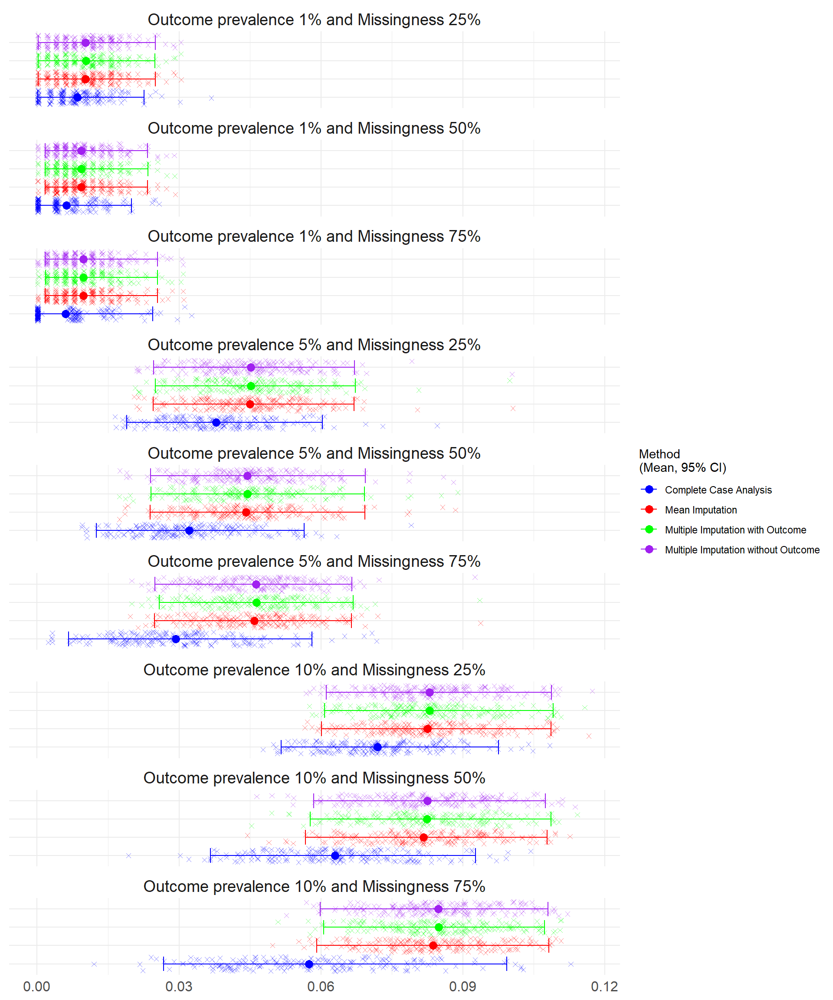
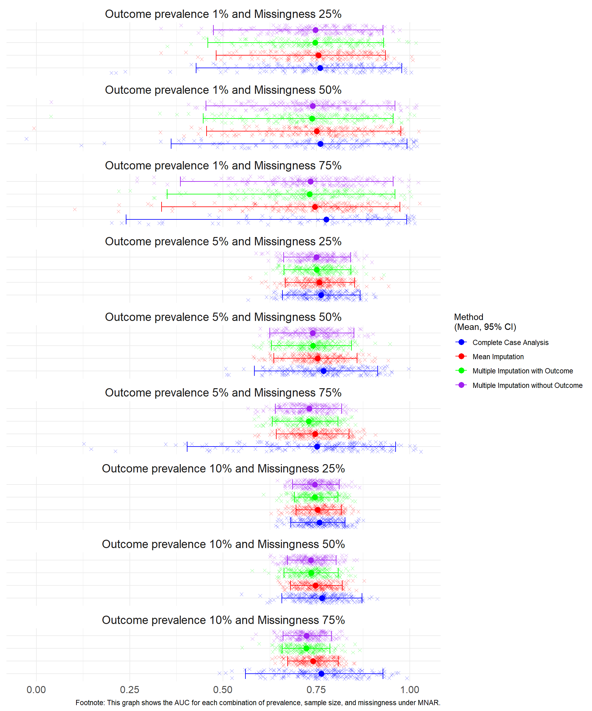
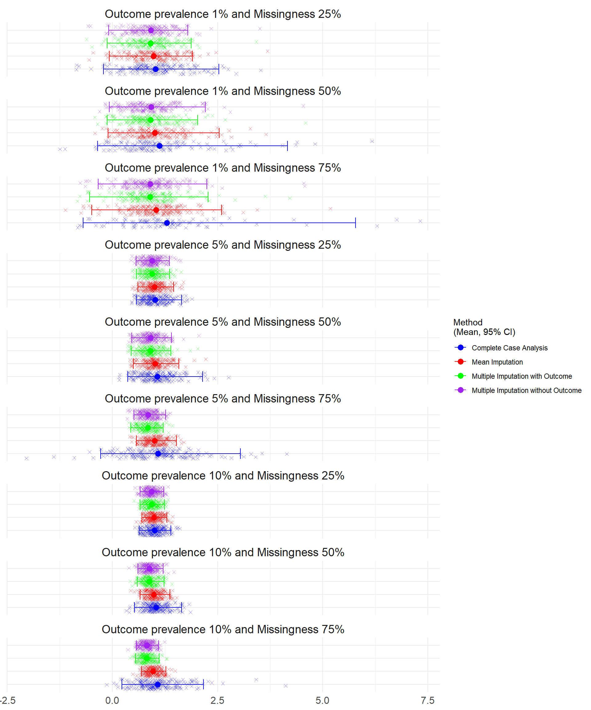
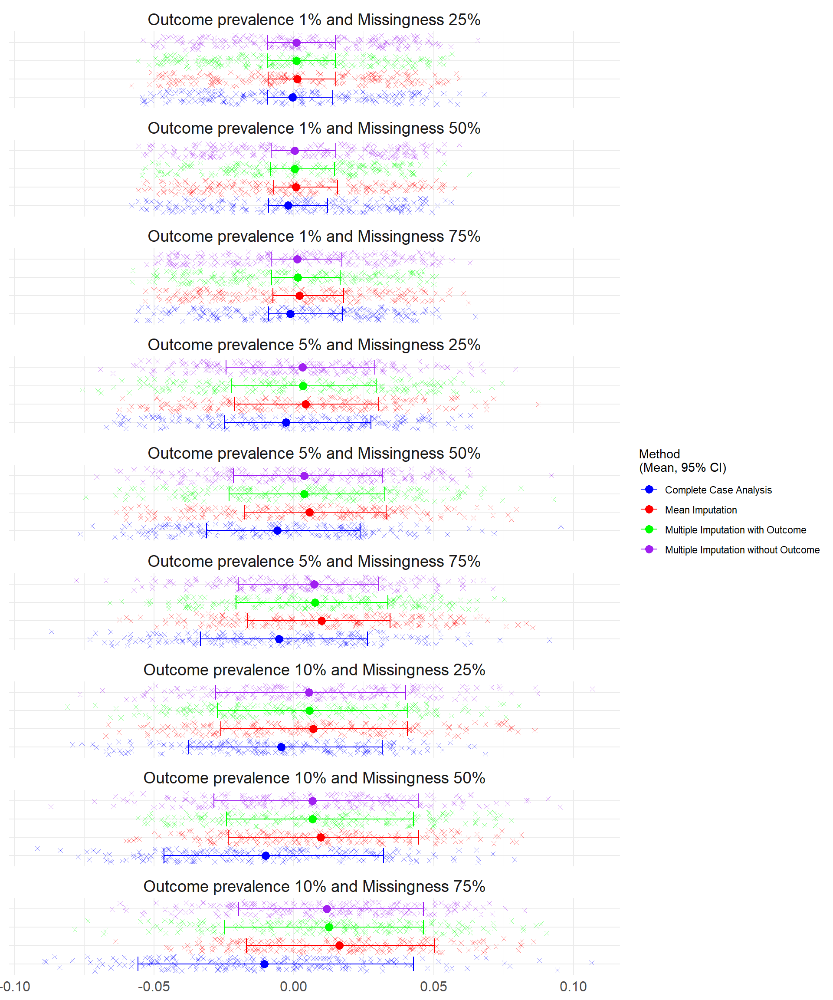
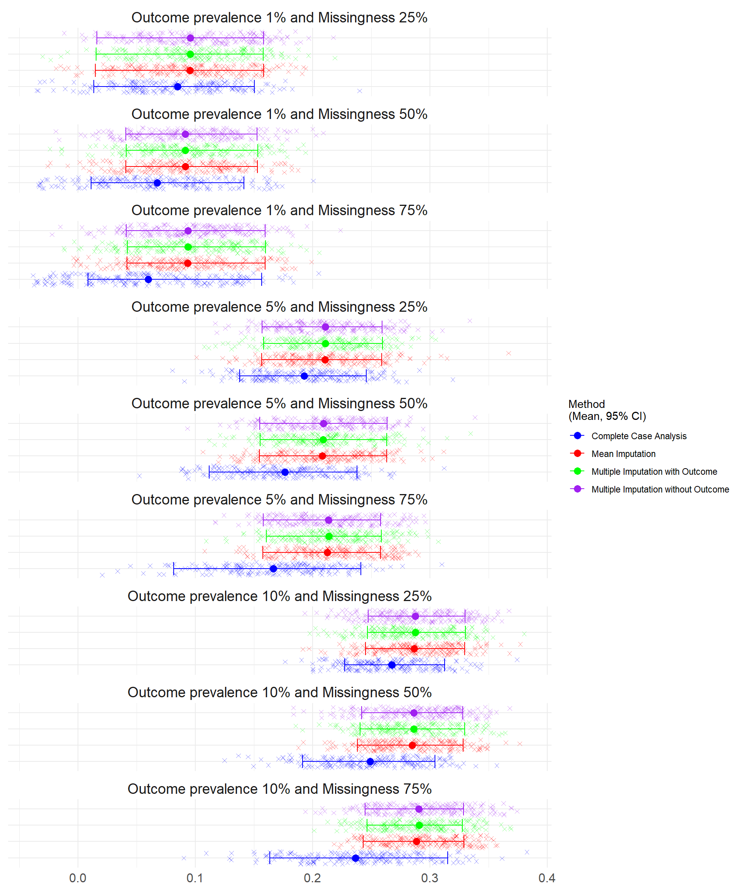

9 Results for MNAR N=500
9.1 Sample size N=500
At the smallest sample size, n=500. There were convergence issues where the outcome prevalence was lower (1% and 5%) and where Complete Case Analysis was used to handle the missing data as the sample size was reduced further. At missingness of 75%, more than half of the simulations at 1% prevalence were unable to calculate the discrimination (AUC) (53%), calibration intercept (53%) and slope (53%). This is broken down in Table 9.1 at the end of the page.
9.1.0.1 Brier Score
The Brier score ranges between 0 (perfect accuracy) and 1 (perfect inaccuracy).
The average for all senarios under MNAR at n=500 were under 0.1 with lower prevalence having higher accuracy. In all scenarios there was significant overlap of the confidence intervals for all methods and CCA consistently had the lowest average Brier Score.
9.1.0.2 Discrimination
The discrimination was calculated as the Area Under the Curve (AUC). Higher scores indicate better discrimination with 0.5 indicating the model is no better than chance.
The highest average discrimination was associated with higher outcome prevalences at 5% and 10%. Wide confidence intervals were observed for CCA and 1% outcome prevalence . This was also observed under the highest amount of missingness (75%).
Warning: Removed 259 rows containing missing values or values outside the scale range
(`geom_point()`).
9.1.0.3 Calibration in the Large and Calibration Slope
Calibration was assessed through calibration-in-the-large and the calibration slope.
The ideal value of calibration-in-the-large is 0, which indicates perfect calibration, positive values indicate the model is underestimating the risk while negative values indicate overestimation. Larger deviations from 0 suggest poorer calibration.
Worse calibration was observed at higher missingness. At 25% missing values, CCA performed the best, however it was affected most by high missingness (CCA<0 when missingness 50% or 75% and outcome prevlance 5% and 75% ) Multiple imputation and mean imputation had similar calibration across scenarios except where prevalence 1% and missingness 50% which may be due to the number of simulations which did not converge (56%)
Warning: Removed 264 rows containing missing values or values outside the scale range
(`geom_point()`).
The ideal value of the Calibration Slope is 1 indicating perfect calibration across all risk levels. Values less than 1 suggest overfitting (predictions are too extreme), while values greater than 1 suggest underfitting (predictions are too conservative). Values that differ significantly from 1 indicate poor calibration.
CCA was consistently the closest average to 1 followed by mean imputation although the averages were very similar and there were wide overlapping confidence intervals.
Warning: Removed 264 rows containing missing values or values outside the scale range
(`geom_point()`).
9.1.1 Bias
The Bias was assessed for each simulation (where 0 indicates no bias and the model estimates are on average equal to the true values).
At 10% and 5% outcome prevalence, the bias of CCA became increasingly negative and further from 0, mean imputation was also biased with the lowest and similar bias observed in the multiple imputation methods. At 1% prevalence there was no noticeable difference between the bias.

9.1.2 Root Mean Square Error
The RMSE was assessed for each simulation where lower error indicates a better fit of the model.
The lowest prevalence simulations (1%) had the lowest mean square error as did CCA in each scenario although with wide overlapping confidence intervals.

| Scenario | Method to handle missing data | Performance Measure | Average | Lower Confidence Interval | Upper Confidence Interval | Number of simulations that failed to converge |
|---|---|---|---|---|---|---|
| Outcome prevalence 10% and Missingness 75% | Complete Case Analysis | Calibration in the Large | -0.2359 | -1.0632 | 0.5485 | 1 |
| Outcome prevalence 10% and Missingness 75% | Complete Case Analysis | Calibration Slope | 1.0762 | 0.2283 | 2.1630 | 1 |
| Outcome prevalence 10% and Missingness 75% | Complete Case Analysis | AUC | 0.7633 | 0.5604 | 0.9287 | 1 |
| Outcome prevalence 10% and Missingness 75% | Complete Case Analysis | Brier Score | 0.0574 | 0.0268 | 0.0993 | 0 |
| Outcome prevalence 10% and Missingness 75% | Complete Case Analysis | Bias | -0.0105 | -0.0557 | 0.0427 | 0 |
| Outcome prevalence 10% and Missingness 75% | Complete Case Analysis | Mean Square Error | 0.0574 | 0.0268 | 0.0993 | 0 |
| Outcome prevalence 10% and Missingness 75% | Complete Case Analysis | Root Mean Square Error | 0.2366 | 0.1636 | 0.3151 | 0 |
| Outcome prevalence 10% and Missingness 75% | Multiple Imputation without Outcome | Calibration in the Large | 0.1425 | -0.2866 | 0.5949 | 0 |
| Outcome prevalence 10% and Missingness 75% | Multiple Imputation without Outcome | Calibration Slope | 0.8172 | 0.5718 | 1.0945 | 0 |
| Outcome prevalence 10% and Missingness 75% | Multiple Imputation without Outcome | AUC | 0.7234 | 0.6608 | 0.7907 | 0 |
| Outcome prevalence 10% and Missingness 75% | Multiple Imputation without Outcome | Brier Score | 0.0848 | 0.0598 | 0.1080 | 0 |
| Outcome prevalence 10% and Missingness 75% | Multiple Imputation without Outcome | Bias | 0.0118 | -0.0197 | 0.0464 | 0 |
| Outcome prevalence 10% and Missingness 75% | Multiple Imputation without Outcome | Mean Square Error | 0.0848 | 0.0598 | 0.1080 | 0 |
| Outcome prevalence 10% and Missingness 75% | Multiple Imputation without Outcome | Root Mean Square Error | 0.2905 | 0.2446 | 0.3286 | 0 |
| Outcome prevalence 10% and Missingness 75% | Multiple Imputation with Outcome | Calibration in the Large | 0.1516 | -0.3319 | 0.5620 | 0 |
| Outcome prevalence 10% and Missingness 75% | Multiple Imputation with Outcome | Calibration Slope | 0.8137 | 0.5512 | 1.1148 | 0 |
| Outcome prevalence 10% and Missingness 75% | Multiple Imputation with Outcome | AUC | 0.7225 | 0.6579 | 0.7863 | 0 |
| Outcome prevalence 10% and Missingness 75% | Multiple Imputation with Outcome | Brier Score | 0.0849 | 0.0606 | 0.1073 | 0 |
| Outcome prevalence 10% and Missingness 75% | Multiple Imputation with Outcome | Bias | 0.0125 | -0.0247 | 0.0463 | 0 |
| Outcome prevalence 10% and Missingness 75% | Multiple Imputation with Outcome | Mean Square Error | 0.0849 | 0.0606 | 0.1073 | 0 |
| Outcome prevalence 10% and Missingness 75% | Multiple Imputation with Outcome | Root Mean Square Error | 0.2907 | 0.2462 | 0.3275 | 0 |
| Outcome prevalence 10% and Missingness 75% | Mean Imputation | Calibration in the Large | 0.1995 | -0.2521 | 0.6046 | 0 |
| Outcome prevalence 10% and Missingness 75% | Mean Imputation | Calibration Slope | 0.9683 | 0.6957 | 1.2733 | 0 |
| Outcome prevalence 10% and Missingness 75% | Mean Imputation | AUC | 0.7405 | 0.6733 | 0.8085 | 0 |
| Outcome prevalence 10% and Missingness 75% | Mean Imputation | Brier Score | 0.0837 | 0.0591 | 0.1081 | 0 |
| Outcome prevalence 10% and Missingness 75% | Mean Imputation | Bias | 0.0162 | -0.0169 | 0.0502 | 0 |
| Outcome prevalence 10% and Missingness 75% | Mean Imputation | Mean Square Error | 0.0837 | 0.0591 | 0.1081 | 0 |
| Outcome prevalence 10% and Missingness 75% | Mean Imputation | Root Mean Square Error | 0.2884 | 0.2431 | 0.3288 | 0 |
| Outcome prevalence 10% and Missingness 50% | Complete Case Analysis | Calibration in the Large | -0.1949 | -0.9121 | 0.3792 | 0 |
| Outcome prevalence 10% and Missingness 50% | Complete Case Analysis | Calibration Slope | 1.0397 | 0.5273 | 1.6469 | 0 |
| Outcome prevalence 10% and Missingness 50% | Complete Case Analysis | AUC | 0.7649 | 0.6577 | 0.8720 | 0 |
| Outcome prevalence 10% and Missingness 50% | Complete Case Analysis | Brier Score | 0.0629 | 0.0366 | 0.0926 | 0 |
| Outcome prevalence 10% and Missingness 50% | Complete Case Analysis | Bias | -0.0102 | -0.0464 | 0.0321 | 0 |
| Outcome prevalence 10% and Missingness 50% | Complete Case Analysis | Mean Square Error | 0.0629 | 0.0366 | 0.0926 | 0 |
| Outcome prevalence 10% and Missingness 50% | Complete Case Analysis | Root Mean Square Error | 0.2491 | 0.1914 | 0.3044 | 0 |
| Outcome prevalence 10% and Missingness 50% | Multiple Imputation without Outcome | Calibration in the Large | 0.0694 | -0.4339 | 0.5127 | 0 |
| Outcome prevalence 10% and Missingness 50% | Multiple Imputation without Outcome | Calibration Slope | 0.8795 | 0.6096 | 1.2094 | 0 |
| Outcome prevalence 10% and Missingness 50% | Multiple Imputation without Outcome | AUC | 0.7349 | 0.6720 | 0.8031 | 0 |
| Outcome prevalence 10% and Missingness 50% | Multiple Imputation without Outcome | Brier Score | 0.0825 | 0.0585 | 0.1074 | 0 |
| Outcome prevalence 10% and Missingness 50% | Multiple Imputation without Outcome | Bias | 0.0066 | -0.0286 | 0.0445 | 0 |
| Outcome prevalence 10% and Missingness 50% | Multiple Imputation without Outcome | Mean Square Error | 0.0825 | 0.0585 | 0.1074 | 0 |
| Outcome prevalence 10% and Missingness 50% | Multiple Imputation without Outcome | Root Mean Square Error | 0.2863 | 0.2418 | 0.3278 | 0 |
| Outcome prevalence 10% and Missingness 50% | Multiple Imputation with Outcome | Calibration in the Large | 0.0697 | -0.3652 | 0.4899 | 0 |
| Outcome prevalence 10% and Missingness 50% | Multiple Imputation with Outcome | Calibration Slope | 0.8818 | 0.5897 | 1.2279 | 0 |
| Outcome prevalence 10% and Missingness 50% | Multiple Imputation with Outcome | AUC | 0.7358 | 0.6635 | 0.8089 | 0 |
| Outcome prevalence 10% and Missingness 50% | Multiple Imputation with Outcome | Brier Score | 0.0824 | 0.0577 | 0.1087 | 0 |
| Outcome prevalence 10% and Missingness 50% | Multiple Imputation with Outcome | Bias | 0.0066 | -0.0241 | 0.0428 | 0 |
| Outcome prevalence 10% and Missingness 50% | Multiple Imputation with Outcome | Mean Square Error | 0.0824 | 0.0577 | 0.1087 | 0 |
| Outcome prevalence 10% and Missingness 50% | Multiple Imputation with Outcome | Root Mean Square Error | 0.2862 | 0.2403 | 0.3296 | 0 |
| Outcome prevalence 10% and Missingness 50% | Mean Imputation | Calibration in the Large | 0.1065 | -0.3553 | 0.5091 | 0 |
| Outcome prevalence 10% and Missingness 50% | Mean Imputation | Calibration Slope | 0.9882 | 0.6600 | 1.3674 | 0 |
| Outcome prevalence 10% and Missingness 50% | Mean Imputation | AUC | 0.7475 | 0.6804 | 0.8194 | 0 |
| Outcome prevalence 10% and Missingness 50% | Mean Imputation | Brier Score | 0.0816 | 0.0567 | 0.1078 | 0 |
| Outcome prevalence 10% and Missingness 50% | Mean Imputation | Bias | 0.0095 | -0.0235 | 0.0447 | 0 |
| Outcome prevalence 10% and Missingness 50% | Mean Imputation | Mean Square Error | 0.0816 | 0.0567 | 0.1078 | 0 |
| Outcome prevalence 10% and Missingness 50% | Mean Imputation | Root Mean Square Error | 0.2848 | 0.2381 | 0.3283 | 0 |
| Outcome prevalence 10% and Missingness 25% | Complete Case Analysis | Calibration in the Large | -0.0808 | -0.6078 | 0.3748 | 0 |
| Outcome prevalence 10% and Missingness 25% | Complete Case Analysis | Calibration Slope | 1.0002 | 0.6354 | 1.3908 | 0 |
| Outcome prevalence 10% and Missingness 25% | Complete Case Analysis | AUC | 0.7583 | 0.6817 | 0.8272 | 0 |
| Outcome prevalence 10% and Missingness 25% | Complete Case Analysis | Brier Score | 0.0719 | 0.0516 | 0.0976 | 0 |
| Outcome prevalence 10% and Missingness 25% | Complete Case Analysis | Bias | -0.0046 | -0.0375 | 0.0316 | 0 |
| Outcome prevalence 10% and Missingness 25% | Complete Case Analysis | Mean Square Error | 0.0719 | 0.0516 | 0.0976 | 0 |
| Outcome prevalence 10% and Missingness 25% | Complete Case Analysis | Root Mean Square Error | 0.2673 | 0.2271 | 0.3124 | 0 |
| Outcome prevalence 10% and Missingness 25% | Multiple Imputation without Outcome | Calibration in the Large | 0.0543 | -0.3994 | 0.4409 | 0 |
| Outcome prevalence 10% and Missingness 25% | Multiple Imputation without Outcome | Calibration Slope | 0.9278 | 0.6581 | 1.2231 | 0 |
| Outcome prevalence 10% and Missingness 25% | Multiple Imputation without Outcome | AUC | 0.7461 | 0.6863 | 0.8108 | 0 |
| Outcome prevalence 10% and Missingness 25% | Multiple Imputation without Outcome | Brier Score | 0.0830 | 0.0611 | 0.1088 | 0 |
| Outcome prevalence 10% and Missingness 25% | Multiple Imputation without Outcome | Bias | 0.0055 | -0.0279 | 0.0400 | 0 |
| Outcome prevalence 10% and Missingness 25% | Multiple Imputation without Outcome | Mean Square Error | 0.0830 | 0.0611 | 0.1088 | 0 |
| Outcome prevalence 10% and Missingness 25% | Multiple Imputation without Outcome | Root Mean Square Error | 0.2873 | 0.2472 | 0.3298 | 0 |
| Outcome prevalence 10% and Missingness 25% | Multiple Imputation with Outcome | Calibration in the Large | 0.0546 | -0.4060 | 0.4541 | 0 |
| Outcome prevalence 10% and Missingness 25% | Multiple Imputation with Outcome | Calibration Slope | 0.9265 | 0.6615 | 1.2346 | 0 |
| Outcome prevalence 10% and Missingness 25% | Multiple Imputation with Outcome | AUC | 0.7458 | 0.6912 | 0.8076 | 0 |
| Outcome prevalence 10% and Missingness 25% | Multiple Imputation with Outcome | Brier Score | 0.0830 | 0.0608 | 0.1091 | 0 |
| Outcome prevalence 10% and Missingness 25% | Multiple Imputation with Outcome | Bias | 0.0055 | -0.0274 | 0.0408 | 0 |
| Outcome prevalence 10% and Missingness 25% | Multiple Imputation with Outcome | Mean Square Error | 0.0830 | 0.0608 | 0.1091 | 0 |
| Outcome prevalence 10% and Missingness 25% | Multiple Imputation with Outcome | Root Mean Square Error | 0.2873 | 0.2465 | 0.3303 | 0 |
| Outcome prevalence 10% and Missingness 25% | Mean Imputation | Calibration in the Large | 0.0727 | -0.3685 | 0.4554 | 0 |
| Outcome prevalence 10% and Missingness 25% | Mean Imputation | Calibration Slope | 0.9887 | 0.7027 | 1.2977 | 0 |
| Outcome prevalence 10% and Missingness 25% | Mean Imputation | AUC | 0.7531 | 0.6957 | 0.8172 | 0 |
| Outcome prevalence 10% and Missingness 25% | Mean Imputation | Brier Score | 0.0825 | 0.0601 | 0.1086 | 0 |
| Outcome prevalence 10% and Missingness 25% | Mean Imputation | Bias | 0.0069 | -0.0261 | 0.0407 | 0 |
| Outcome prevalence 10% and Missingness 25% | Mean Imputation | Mean Square Error | 0.0825 | 0.0601 | 0.1086 | 0 |
| Outcome prevalence 10% and Missingness 25% | Mean Imputation | Root Mean Square Error | 0.2865 | 0.2451 | 0.3295 | 0 |
| Outcome prevalence 5% and Missingness 75% | Complete Case Analysis | Calibration in the Large | -0.2391 | -1.5460 | 0.6256 | 8 |
| Outcome prevalence 5% and Missingness 75% | Complete Case Analysis | Calibration Slope | 1.0813 | -0.2812 | 3.0472 | 8 |
| Outcome prevalence 5% and Missingness 75% | Complete Case Analysis | AUC | 0.7517 | 0.4043 | 0.9619 | 8 |
| Outcome prevalence 5% and Missingness 75% | Complete Case Analysis | Brier Score | 0.0293 | 0.0066 | 0.0581 | 0 |
| Outcome prevalence 5% and Missingness 75% | Complete Case Analysis | Bias | -0.0052 | -0.0334 | 0.0263 | 0 |
| Outcome prevalence 5% and Missingness 75% | Complete Case Analysis | Mean Square Error | 0.0293 | 0.0066 | 0.0581 | 0 |
| Outcome prevalence 5% and Missingness 75% | Complete Case Analysis | Root Mean Square Error | 0.1663 | 0.0814 | 0.2410 | 0 |
| Outcome prevalence 5% and Missingness 75% | Multiple Imputation without Outcome | Calibration in the Large | 0.1383 | -0.6207 | 0.6406 | 0 |
| Outcome prevalence 5% and Missingness 75% | Multiple Imputation without Outcome | Calibration Slope | 0.8503 | 0.5119 | 1.2676 | 0 |
| Outcome prevalence 5% and Missingness 75% | Multiple Imputation without Outcome | AUC | 0.7309 | 0.6399 | 0.8175 | 0 |
| Outcome prevalence 5% and Missingness 75% | Multiple Imputation without Outcome | Brier Score | 0.0462 | 0.0249 | 0.0665 | 0 |
| Outcome prevalence 5% and Missingness 75% | Multiple Imputation without Outcome | Bias | 0.0073 | -0.0199 | 0.0303 | 0 |
| Outcome prevalence 5% and Missingness 75% | Multiple Imputation without Outcome | Mean Square Error | 0.0462 | 0.0249 | 0.0665 | 0 |
| Outcome prevalence 5% and Missingness 75% | Multiple Imputation without Outcome | Root Mean Square Error | 0.2135 | 0.1577 | 0.2579 | 0 |
| Outcome prevalence 5% and Missingness 75% | Multiple Imputation with Outcome | Calibration in the Large | 0.1469 | -0.6213 | 0.7005 | 0 |
| Outcome prevalence 5% and Missingness 75% | Multiple Imputation with Outcome | Calibration Slope | 0.8410 | 0.4427 | 1.2091 | 0 |
| Outcome prevalence 5% and Missingness 75% | Multiple Imputation with Outcome | AUC | 0.7292 | 0.6316 | 0.8075 | 0 |
| Outcome prevalence 5% and Missingness 75% | Multiple Imputation with Outcome | Brier Score | 0.0464 | 0.0258 | 0.0668 | 0 |
| Outcome prevalence 5% and Missingness 75% | Multiple Imputation with Outcome | Bias | 0.0076 | -0.0206 | 0.0336 | 0 |
| Outcome prevalence 5% and Missingness 75% | Multiple Imputation with Outcome | Mean Square Error | 0.0464 | 0.0258 | 0.0668 | 0 |
| Outcome prevalence 5% and Missingness 75% | Multiple Imputation with Outcome | Root Mean Square Error | 0.2137 | 0.1606 | 0.2584 | 0 |
| Outcome prevalence 5% and Missingness 75% | Mean Imputation | Calibration in the Large | 0.2039 | -0.5313 | 0.7042 | 0 |
| Outcome prevalence 5% and Missingness 75% | Mean Imputation | Calibration Slope | 0.9990 | 0.5703 | 1.5187 | 0 |
| Outcome prevalence 5% and Missingness 75% | Mean Imputation | AUC | 0.7471 | 0.6426 | 0.8373 | 0 |
| Outcome prevalence 5% and Missingness 75% | Mean Imputation | Brier Score | 0.0459 | 0.0248 | 0.0664 | 0 |
| Outcome prevalence 5% and Missingness 75% | Mean Imputation | Bias | 0.0099 | -0.0165 | 0.0344 | 0 |
| Outcome prevalence 5% and Missingness 75% | Mean Imputation | Mean Square Error | 0.0459 | 0.0248 | 0.0664 | 0 |
| Outcome prevalence 5% and Missingness 75% | Mean Imputation | Root Mean Square Error | 0.2126 | 0.1574 | 0.2577 | 0 |
| Outcome prevalence 5% and Missingness 50% | Complete Case Analysis | Calibration in the Large | -0.2557 | -1.3763 | 0.4928 | 0 |
| Outcome prevalence 5% and Missingness 50% | Complete Case Analysis | Calibration Slope | 1.0686 | 0.3694 | 2.1416 | 0 |
| Outcome prevalence 5% and Missingness 50% | Complete Case Analysis | AUC | 0.7691 | 0.5841 | 0.9140 | 0 |
| Outcome prevalence 5% and Missingness 50% | Complete Case Analysis | Brier Score | 0.0321 | 0.0125 | 0.0565 | 0 |
| Outcome prevalence 5% and Missingness 50% | Complete Case Analysis | Bias | -0.0059 | -0.0312 | 0.0237 | 0 |
| Outcome prevalence 5% and Missingness 50% | Complete Case Analysis | Mean Square Error | 0.0321 | 0.0125 | 0.0565 | 0 |
| Outcome prevalence 5% and Missingness 50% | Complete Case Analysis | Root Mean Square Error | 0.1764 | 0.1119 | 0.2376 | 0 |
| Outcome prevalence 5% and Missingness 50% | Multiple Imputation without Outcome | Calibration in the Large | 0.0463 | -0.6108 | 0.6176 | 0 |
| Outcome prevalence 5% and Missingness 50% | Multiple Imputation without Outcome | Calibration Slope | 0.9046 | 0.4614 | 1.4027 | 0 |
| Outcome prevalence 5% and Missingness 50% | Multiple Imputation without Outcome | AUC | 0.7399 | 0.6250 | 0.8507 | 0 |
| Outcome prevalence 5% and Missingness 50% | Multiple Imputation without Outcome | Brier Score | 0.0444 | 0.0240 | 0.0694 | 0 |
| Outcome prevalence 5% and Missingness 50% | Multiple Imputation without Outcome | Bias | 0.0037 | -0.0216 | 0.0316 | 0 |
| Outcome prevalence 5% and Missingness 50% | Multiple Imputation without Outcome | Mean Square Error | 0.0444 | 0.0240 | 0.0694 | 0 |
| Outcome prevalence 5% and Missingness 50% | Multiple Imputation without Outcome | Root Mean Square Error | 0.2090 | 0.1550 | 0.2634 | 0 |
| Outcome prevalence 5% and Missingness 50% | Multiple Imputation with Outcome | Calibration in the Large | 0.0465 | -0.7597 | 0.6127 | 0 |
| Outcome prevalence 5% and Missingness 50% | Multiple Imputation with Outcome | Calibration Slope | 0.9084 | 0.4451 | 1.3909 | 0 |
| Outcome prevalence 5% and Missingness 50% | Multiple Imputation with Outcome | AUC | 0.7412 | 0.6293 | 0.8445 | 0 |
| Outcome prevalence 5% and Missingness 50% | Multiple Imputation with Outcome | Brier Score | 0.0444 | 0.0241 | 0.0692 | 0 |
| Outcome prevalence 5% and Missingness 50% | Multiple Imputation with Outcome | Bias | 0.0037 | -0.0232 | 0.0326 | 0 |
| Outcome prevalence 5% and Missingness 50% | Multiple Imputation with Outcome | Mean Square Error | 0.0444 | 0.0241 | 0.0692 | 0 |
| Outcome prevalence 5% and Missingness 50% | Multiple Imputation with Outcome | Root Mean Square Error | 0.2089 | 0.1552 | 0.2631 | 0 |
| Outcome prevalence 5% and Missingness 50% | Mean Imputation | Calibration in the Large | 0.0898 | -0.5794 | 0.6317 | 0 |
| Outcome prevalence 5% and Missingness 50% | Mean Imputation | Calibration Slope | 1.0195 | 0.4995 | 1.5798 | 0 |
| Outcome prevalence 5% and Missingness 50% | Mean Imputation | AUC | 0.7531 | 0.6361 | 0.8594 | 0 |
| Outcome prevalence 5% and Missingness 50% | Mean Imputation | Brier Score | 0.0441 | 0.0239 | 0.0693 | 0 |
| Outcome prevalence 5% and Missingness 50% | Mean Imputation | Bias | 0.0055 | -0.0178 | 0.0329 | 0 |
| Outcome prevalence 5% and Missingness 50% | Mean Imputation | Mean Square Error | 0.0441 | 0.0239 | 0.0693 | 0 |
| Outcome prevalence 5% and Missingness 50% | Mean Imputation | Root Mean Square Error | 0.2082 | 0.1546 | 0.2632 | 0 |
| Outcome prevalence 5% and Missingness 25% | Complete Case Analysis | Calibration in the Large | -0.1248 | -0.9009 | 0.5693 | 0 |
| Outcome prevalence 5% and Missingness 25% | Complete Case Analysis | Calibration Slope | 1.0171 | 0.5723 | 1.6438 | 0 |
| Outcome prevalence 5% and Missingness 25% | Complete Case Analysis | AUC | 0.7623 | 0.6593 | 0.8669 | 0 |
| Outcome prevalence 5% and Missingness 25% | Complete Case Analysis | Brier Score | 0.0379 | 0.0189 | 0.0603 | 0 |
| Outcome prevalence 5% and Missingness 25% | Complete Case Analysis | Bias | -0.0028 | -0.0247 | 0.0275 | 0 |
| Outcome prevalence 5% and Missingness 25% | Complete Case Analysis | Mean Square Error | 0.0379 | 0.0189 | 0.0603 | 0 |
| Outcome prevalence 5% and Missingness 25% | Complete Case Analysis | Root Mean Square Error | 0.1925 | 0.1376 | 0.2455 | 0 |
| Outcome prevalence 5% and Missingness 25% | Multiple Imputation without Outcome | Calibration in the Large | 0.0327 | -0.7695 | 0.5536 | 0 |
| Outcome prevalence 5% and Missingness 25% | Multiple Imputation without Outcome | Calibration Slope | 0.9416 | 0.5614 | 1.3574 | 0 |
| Outcome prevalence 5% and Missingness 25% | Multiple Imputation without Outcome | AUC | 0.7501 | 0.6623 | 0.8418 | 0 |
| Outcome prevalence 5% and Missingness 25% | Multiple Imputation without Outcome | Brier Score | 0.0452 | 0.0246 | 0.0671 | 0 |
| Outcome prevalence 5% and Missingness 25% | Multiple Imputation without Outcome | Bias | 0.0031 | -0.0243 | 0.0290 | 0 |
| Outcome prevalence 5% and Missingness 25% | Multiple Imputation without Outcome | Mean Square Error | 0.0452 | 0.0246 | 0.0671 | 0 |
| Outcome prevalence 5% and Missingness 25% | Multiple Imputation without Outcome | Root Mean Square Error | 0.2108 | 0.1570 | 0.2591 | 0 |
| Outcome prevalence 5% and Missingness 25% | Multiple Imputation with Outcome | Calibration in the Large | 0.0330 | -0.7252 | 0.5574 | 0 |
| Outcome prevalence 5% and Missingness 25% | Multiple Imputation with Outcome | Calibration Slope | 0.9448 | 0.5715 | 1.3587 | 0 |
| Outcome prevalence 5% and Missingness 25% | Multiple Imputation with Outcome | AUC | 0.7512 | 0.6629 | 0.8424 | 0 |
| Outcome prevalence 5% and Missingness 25% | Multiple Imputation with Outcome | Brier Score | 0.0452 | 0.0250 | 0.0673 | 0 |
| Outcome prevalence 5% and Missingness 25% | Multiple Imputation with Outcome | Bias | 0.0031 | -0.0224 | 0.0294 | 0 |
| Outcome prevalence 5% and Missingness 25% | Multiple Imputation with Outcome | Mean Square Error | 0.0452 | 0.0250 | 0.0673 | 0 |
| Outcome prevalence 5% and Missingness 25% | Multiple Imputation with Outcome | Root Mean Square Error | 0.2108 | 0.1581 | 0.2593 | 0 |
| Outcome prevalence 5% and Missingness 25% | Mean Imputation | Calibration in the Large | 0.0549 | -0.6894 | 0.5950 | 0 |
| Outcome prevalence 5% and Missingness 25% | Mean Imputation | Calibration Slope | 1.0052 | 0.6093 | 1.4589 | 0 |
| Outcome prevalence 5% and Missingness 25% | Mean Imputation | AUC | 0.7580 | 0.6663 | 0.8526 | 0 |
| Outcome prevalence 5% and Missingness 25% | Mean Imputation | Brier Score | 0.0450 | 0.0245 | 0.0670 | 0 |
| Outcome prevalence 5% and Missingness 25% | Mean Imputation | Bias | 0.0041 | -0.0211 | 0.0303 | 0 |
| Outcome prevalence 5% and Missingness 25% | Mean Imputation | Mean Square Error | 0.0450 | 0.0245 | 0.0670 | 0 |
| Outcome prevalence 5% and Missingness 25% | Mean Imputation | Root Mean Square Error | 0.2104 | 0.1565 | 0.2588 | 0 |
| Outcome prevalence 1% and Missingness 75% | Complete Case Analysis | Calibration in the Large | 0.3987 | -0.1627 | 1.3344 | 106 |
| Outcome prevalence 1% and Missingness 75% | Complete Case Analysis | Calibration Slope | 1.2979 | -0.6942 | 5.7800 | 106 |
| Outcome prevalence 1% and Missingness 75% | Complete Case Analysis | AUC | 0.7762 | 0.2400 | 0.9922 | 106 |
| Outcome prevalence 1% and Missingness 75% | Complete Case Analysis | Brier Score | 0.0060 | 0.0001 | 0.0244 | 0 |
| Outcome prevalence 1% and Missingness 75% | Complete Case Analysis | Bias | -0.0013 | -0.0090 | 0.0173 | 0 |
| Outcome prevalence 1% and Missingness 75% | Complete Case Analysis | Mean Square Error | 0.0060 | 0.0001 | 0.0244 | 0 |
| Outcome prevalence 1% and Missingness 75% | Complete Case Analysis | Root Mean Square Error | 0.0598 | 0.0085 | 0.1563 | 0 |
| Outcome prevalence 1% and Missingness 75% | Multiple Imputation without Outcome | Calibration in the Large | -0.0471 | -1.5471 | 1.1331 | 5 |
| Outcome prevalence 1% and Missingness 75% | Multiple Imputation without Outcome | Calibration Slope | 0.9022 | -0.3340 | 2.2437 | 5 |
| Outcome prevalence 1% and Missingness 75% | Multiple Imputation without Outcome | AUC | 0.7342 | 0.3860 | 0.9554 | 5 |
| Outcome prevalence 1% and Missingness 75% | Multiple Imputation without Outcome | Brier Score | 0.0098 | 0.0017 | 0.0254 | 0 |
| Outcome prevalence 1% and Missingness 75% | Multiple Imputation without Outcome | Bias | 0.0012 | -0.0081 | 0.0171 | 0 |
| Outcome prevalence 1% and Missingness 75% | Multiple Imputation without Outcome | Mean Square Error | 0.0098 | 0.0017 | 0.0254 | 0 |
| Outcome prevalence 1% and Missingness 75% | Multiple Imputation without Outcome | Root Mean Square Error | 0.0937 | 0.0411 | 0.1595 | 0 |
| Outcome prevalence 1% and Missingness 75% | Multiple Imputation with Outcome | Calibration in the Large | -0.0396 | -1.5669 | 1.0995 | 5 |
| Outcome prevalence 1% and Missingness 75% | Multiple Imputation with Outcome | Calibration Slope | 0.8930 | -0.5397 | 2.2748 | 5 |
| Outcome prevalence 1% and Missingness 75% | Multiple Imputation with Outcome | AUC | 0.7320 | 0.3500 | 0.9607 | 5 |
| Outcome prevalence 1% and Missingness 75% | Multiple Imputation with Outcome | Brier Score | 0.0098 | 0.0018 | 0.0255 | 0 |
| Outcome prevalence 1% and Missingness 75% | Multiple Imputation with Outcome | Bias | 0.0013 | -0.0079 | 0.0166 | 0 |
| Outcome prevalence 1% and Missingness 75% | Multiple Imputation with Outcome | Mean Square Error | 0.0098 | 0.0018 | 0.0255 | 0 |
| Outcome prevalence 1% and Missingness 75% | Multiple Imputation with Outcome | Root Mean Square Error | 0.0937 | 0.0420 | 0.1597 | 0 |
| Outcome prevalence 1% and Missingness 75% | Mean Imputation | Calibration in the Large | 0.0473 | -1.4520 | 1.2226 | 7 |
| Outcome prevalence 1% and Missingness 75% | Mean Imputation | Calibration Slope | 1.0374 | -0.4907 | 2.5961 | 7 |
| Outcome prevalence 1% and Missingness 75% | Mean Imputation | AUC | 0.7462 | 0.3352 | 0.9739 | 7 |
| Outcome prevalence 1% and Missingness 75% | Mean Imputation | Brier Score | 0.0098 | 0.0017 | 0.0255 | 0 |
| Outcome prevalence 1% and Missingness 75% | Mean Imputation | Bias | 0.0019 | -0.0075 | 0.0178 | 0 |
| Outcome prevalence 1% and Missingness 75% | Mean Imputation | Mean Square Error | 0.0098 | 0.0017 | 0.0255 | 0 |
| Outcome prevalence 1% and Missingness 75% | Mean Imputation | Root Mean Square Error | 0.0935 | 0.0416 | 0.1596 | 0 |
| Outcome prevalence 1% and Missingness 50% | Complete Case Analysis | Calibration in the Large | -0.1250 | -0.8846 | 1.0053 | 59 |
| Outcome prevalence 1% and Missingness 50% | Complete Case Analysis | Calibration Slope | 1.1201 | -0.3531 | 4.1652 | 59 |
| Outcome prevalence 1% and Missingness 50% | Complete Case Analysis | AUC | 0.7604 | 0.3612 | 0.9930 | 57 |
| Outcome prevalence 1% and Missingness 50% | Complete Case Analysis | Brier Score | 0.0062 | 0.0001 | 0.0199 | 0 |
| Outcome prevalence 1% and Missingness 50% | Complete Case Analysis | Bias | -0.0021 | -0.0090 | 0.0121 | 0 |
| Outcome prevalence 1% and Missingness 50% | Complete Case Analysis | Mean Square Error | 0.0062 | 0.0001 | 0.0199 | 0 |
| Outcome prevalence 1% and Missingness 50% | Complete Case Analysis | Root Mean Square Error | 0.0672 | 0.0110 | 0.1412 | 0 |
| Outcome prevalence 1% and Missingness 50% | Multiple Imputation without Outcome | Calibration in the Large | -0.1289 | -1.5456 | 1.0367 | 6 |
| Outcome prevalence 1% and Missingness 50% | Multiple Imputation without Outcome | Calibration Slope | 0.9188 | -0.0735 | 2.2086 | 6 |
| Outcome prevalence 1% and Missingness 50% | Multiple Imputation without Outcome | AUC | 0.7400 | 0.4544 | 0.9610 | 5 |
| Outcome prevalence 1% and Missingness 50% | Multiple Imputation without Outcome | Brier Score | 0.0093 | 0.0017 | 0.0233 | 0 |
| Outcome prevalence 1% and Missingness 50% | Multiple Imputation without Outcome | Bias | 0.0003 | -0.0081 | 0.0150 | 0 |
| Outcome prevalence 1% and Missingness 50% | Multiple Imputation without Outcome | Mean Square Error | 0.0093 | 0.0017 | 0.0233 | 0 |
| Outcome prevalence 1% and Missingness 50% | Multiple Imputation without Outcome | Root Mean Square Error | 0.0915 | 0.0406 | 0.1527 | 0 |
| Outcome prevalence 1% and Missingness 50% | Multiple Imputation with Outcome | Calibration in the Large | -0.1280 | -1.5621 | 0.9857 | 6 |
| Outcome prevalence 1% and Missingness 50% | Multiple Imputation with Outcome | Calibration Slope | 0.9047 | -0.1237 | 2.0245 | 6 |
| Outcome prevalence 1% and Missingness 50% | Multiple Imputation with Outcome | AUC | 0.7384 | 0.4467 | 0.9557 | 5 |
| Outcome prevalence 1% and Missingness 50% | Multiple Imputation with Outcome | Brier Score | 0.0093 | 0.0017 | 0.0235 | 0 |
| Outcome prevalence 1% and Missingness 50% | Multiple Imputation with Outcome | Bias | 0.0003 | -0.0084 | 0.0145 | 0 |
| Outcome prevalence 1% and Missingness 50% | Multiple Imputation with Outcome | Mean Square Error | 0.0093 | 0.0017 | 0.0235 | 0 |
| Outcome prevalence 1% and Missingness 50% | Multiple Imputation with Outcome | Root Mean Square Error | 0.0915 | 0.0410 | 0.1531 | 0 |
| Outcome prevalence 1% and Missingness 50% | Mean Imputation | Calibration in the Large | -0.0674 | -1.4831 | 1.0990 | 7 |
| Outcome prevalence 1% and Missingness 50% | Mean Imputation | Calibration Slope | 1.0130 | -0.1039 | 2.5373 | 7 |
| Outcome prevalence 1% and Missingness 50% | Mean Imputation | AUC | 0.7507 | 0.4563 | 0.9763 | 6 |
| Outcome prevalence 1% and Missingness 50% | Mean Imputation | Brier Score | 0.0093 | 0.0017 | 0.0233 | 0 |
| Outcome prevalence 1% and Missingness 50% | Mean Imputation | Bias | 0.0008 | -0.0072 | 0.0157 | 0 |
| Outcome prevalence 1% and Missingness 50% | Mean Imputation | Mean Square Error | 0.0093 | 0.0017 | 0.0233 | 0 |
| Outcome prevalence 1% and Missingness 50% | Mean Imputation | Root Mean Square Error | 0.0913 | 0.0407 | 0.1527 | 0 |
| Outcome prevalence 1% and Missingness 25% | Complete Case Analysis | Calibration in the Large | -0.0966 | -1.3034 | 0.9629 | 24 |
| Outcome prevalence 1% and Missingness 25% | Complete Case Analysis | Calibration Slope | 1.0252 | -0.2144 | 2.5334 | 24 |
| Outcome prevalence 1% and Missingness 25% | Complete Case Analysis | AUC | 0.7602 | 0.4282 | 0.9792 | 24 |
| Outcome prevalence 1% and Missingness 25% | Complete Case Analysis | Brier Score | 0.0085 | 0.0002 | 0.0226 | 0 |
| Outcome prevalence 1% and Missingness 25% | Complete Case Analysis | Bias | -0.0004 | -0.0094 | 0.0139 | 0 |
| Outcome prevalence 1% and Missingness 25% | Complete Case Analysis | Mean Square Error | 0.0085 | 0.0002 | 0.0226 | 0 |
| Outcome prevalence 1% and Missingness 25% | Complete Case Analysis | Root Mean Square Error | 0.0847 | 0.0136 | 0.1504 | 0 |
| Outcome prevalence 1% and Missingness 25% | Multiple Imputation without Outcome | Calibration in the Large | -0.0449 | -1.5992 | 0.9708 | 10 |
| Outcome prevalence 1% and Missingness 25% | Multiple Imputation without Outcome | Calibration Slope | 0.9132 | -0.0849 | 1.7950 | 10 |
| Outcome prevalence 1% and Missingness 25% | Multiple Imputation without Outcome | AUC | 0.7474 | 0.4737 | 0.9284 | 10 |
| Outcome prevalence 1% and Missingness 25% | Multiple Imputation without Outcome | Brier Score | 0.0103 | 0.0003 | 0.0250 | 0 |
| Outcome prevalence 1% and Missingness 25% | Multiple Imputation without Outcome | Bias | 0.0009 | -0.0094 | 0.0148 | 0 |
| Outcome prevalence 1% and Missingness 25% | Multiple Imputation without Outcome | Mean Square Error | 0.0103 | 0.0003 | 0.0250 | 0 |
| Outcome prevalence 1% and Missingness 25% | Multiple Imputation without Outcome | Root Mean Square Error | 0.0955 | 0.0159 | 0.1580 | 0 |
| Outcome prevalence 1% and Missingness 25% | Multiple Imputation with Outcome | Calibration in the Large | -0.0449 | -1.6040 | 0.9653 | 10 |
| Outcome prevalence 1% and Missingness 25% | Multiple Imputation with Outcome | Calibration Slope | 0.9086 | -0.1271 | 1.8705 | 10 |
| Outcome prevalence 1% and Missingness 25% | Multiple Imputation with Outcome | AUC | 0.7465 | 0.4593 | 0.9297 | 10 |
| Outcome prevalence 1% and Missingness 25% | Multiple Imputation with Outcome | Brier Score | 0.0103 | 0.0002 | 0.0249 | 0 |
| Outcome prevalence 1% and Missingness 25% | Multiple Imputation with Outcome | Bias | 0.0009 | -0.0095 | 0.0148 | 0 |
| Outcome prevalence 1% and Missingness 25% | Multiple Imputation with Outcome | Mean Square Error | 0.0103 | 0.0002 | 0.0249 | 0 |
| Outcome prevalence 1% and Missingness 25% | Multiple Imputation with Outcome | Root Mean Square Error | 0.0955 | 0.0154 | 0.1579 | 0 |
| Outcome prevalence 1% and Missingness 25% | Mean Imputation | Calibration in the Large | -0.0170 | -1.5853 | 0.9882 | 10 |
| Outcome prevalence 1% and Missingness 25% | Mean Imputation | Calibration Slope | 0.9783 | -0.0743 | 1.8992 | 10 |
| Outcome prevalence 1% and Missingness 25% | Mean Imputation | AUC | 0.7555 | 0.4814 | 0.9348 | 10 |
| Outcome prevalence 1% and Missingness 25% | Mean Imputation | Brier Score | 0.0103 | 0.0002 | 0.0250 | 0 |
| Outcome prevalence 1% and Missingness 25% | Mean Imputation | Bias | 0.0012 | -0.0092 | 0.0150 | 0 |
| Outcome prevalence 1% and Missingness 25% | Mean Imputation | Mean Square Error | 0.0103 | 0.0002 | 0.0250 | 0 |
| Outcome prevalence 1% and Missingness 25% | Mean Imputation | Root Mean Square Error | 0.0954 | 0.0146 | 0.1580 | 0 |